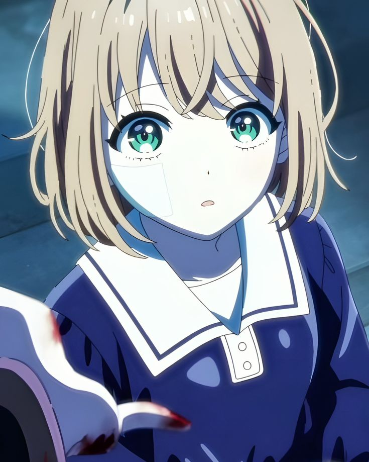

Totsuki Sheena 14 anos
A garota que ainda
não se acostumou.
Sheena deseja, acima de tudo, uma vida tranquila. Sensível, cautelosa e gentil, ela não consegue aceitar a naturalidade com que a escola trata a guerra — e parece deslocada justamente porque ainda reage ao que há de desumano ao seu redor.
Sua hesitação não é fraqueza. É a prova de que o horror ainda não conseguiu se tornar normal.
- Sensível
- Reflexiva
- Humana

img/sheena.webp